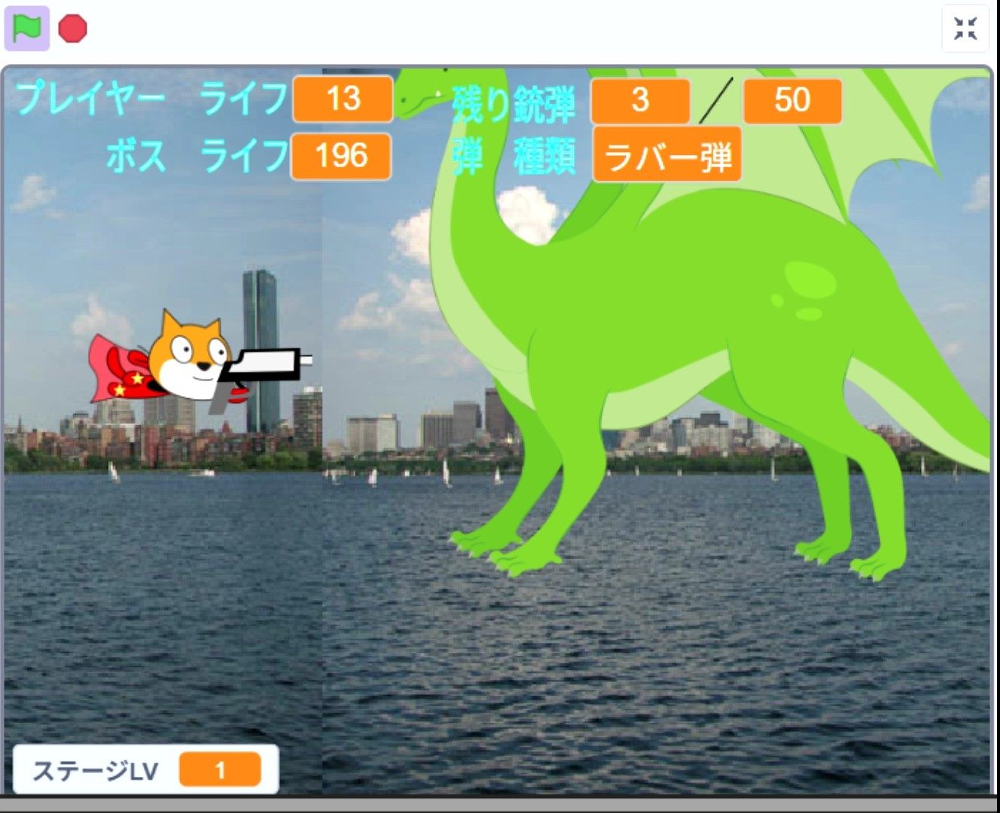
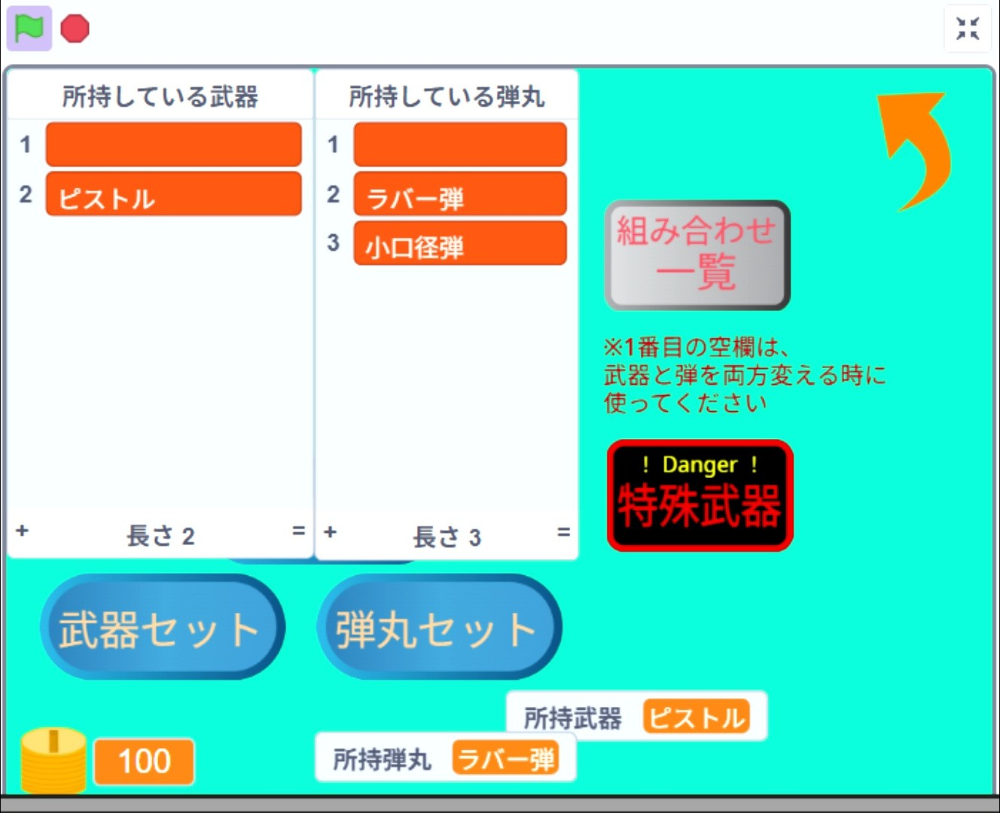
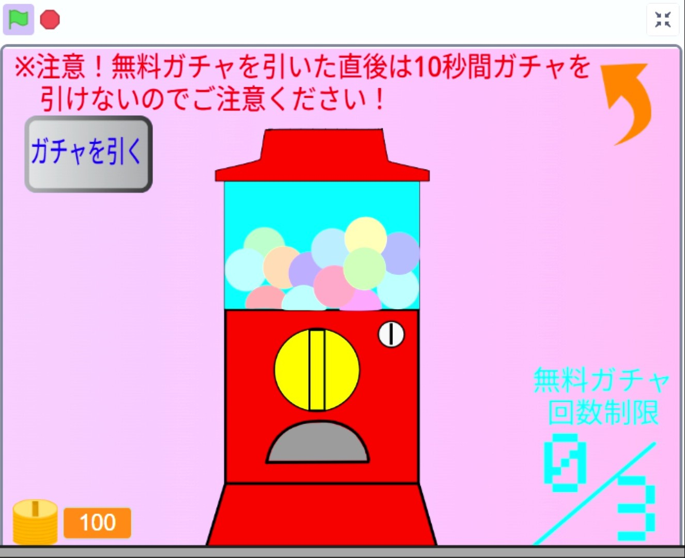
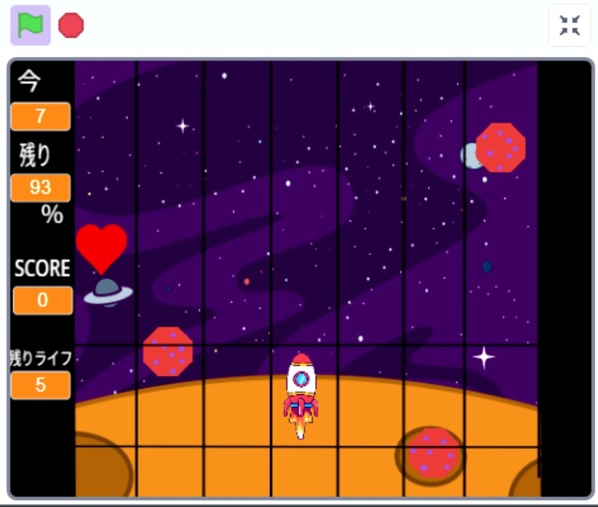
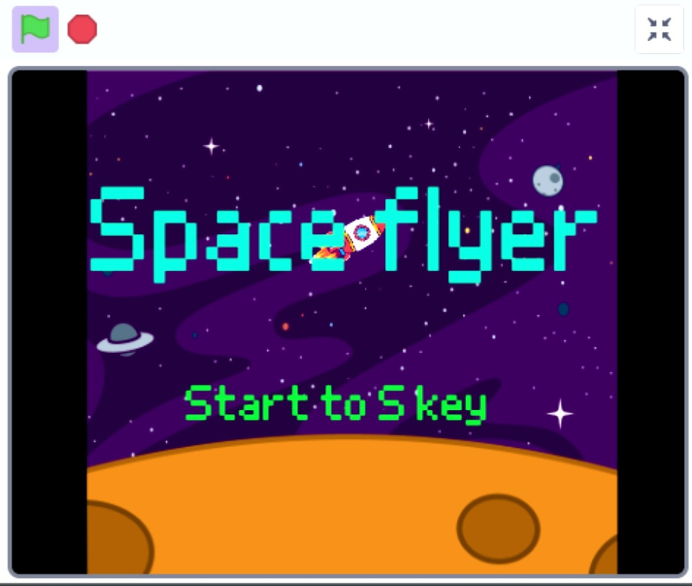
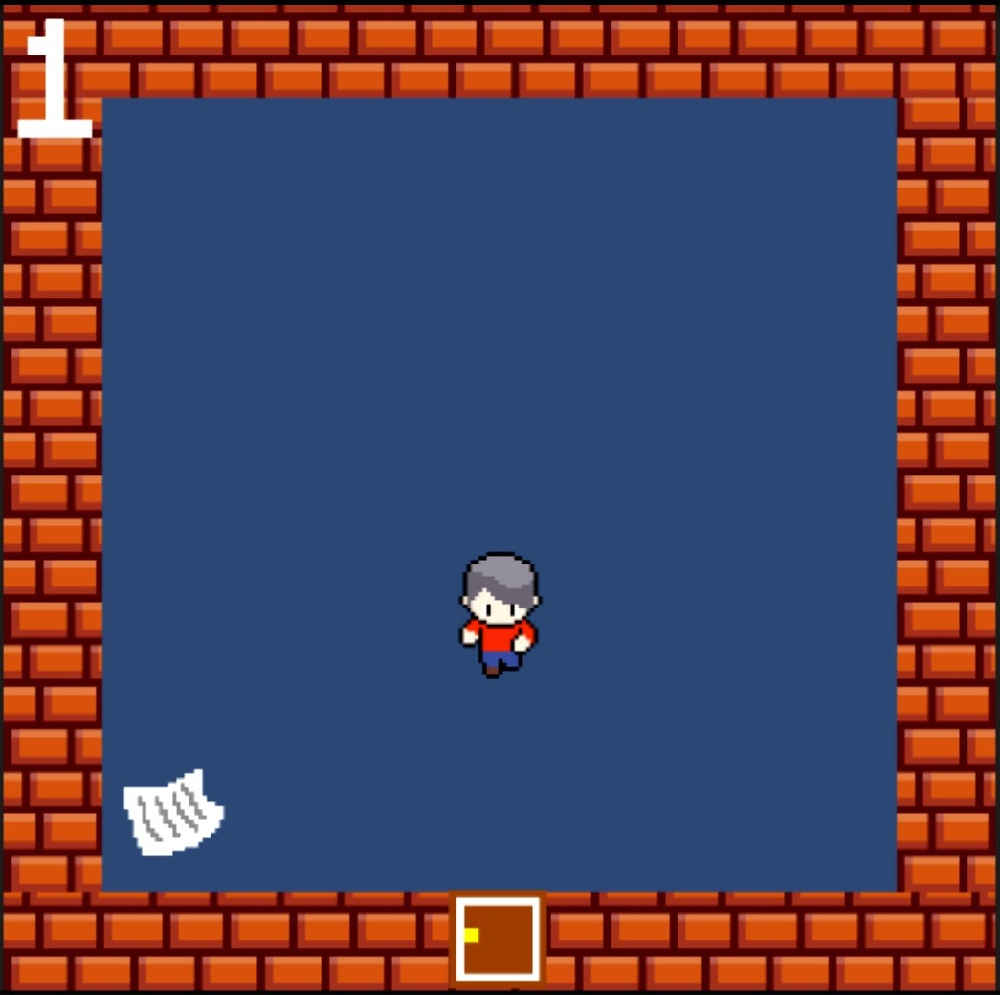
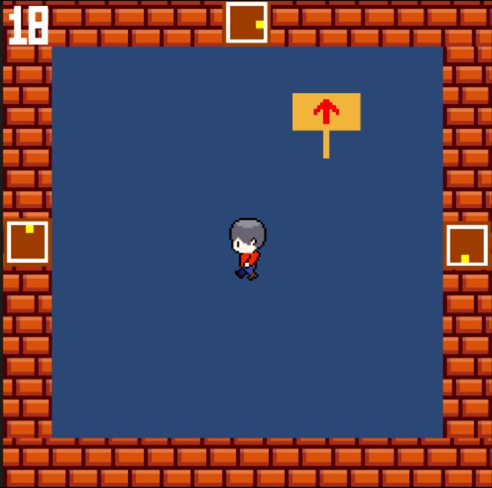
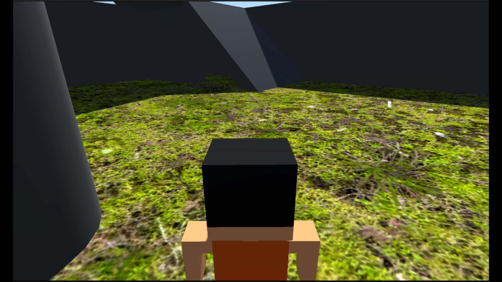
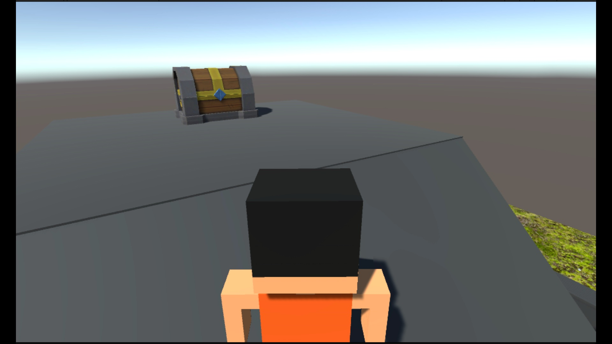

プログラム面における成果物一覧
1,Scratch
① All Stars Shooting Game
このゲームは画面スクロール式の2Dシューティングゲームになり、上下左右移動を用いて物資を上手く獲得しながら敵を倒す物になります。
このゲームの特徴、作り込んだ部分は以下の３つです。
- 武器・弾丸の種類を豊富にし、ディテールを細かく作った。
- 多様なステージレベルを用意し、遊び込み要素を作った。
- 武器と弾丸の組み合わせを固定化し、リアリティも追求した。
プレイ画像



② スペースフライヤー
このゲームはロケットを主人公としたレーン移動式の障害物回避ゲームになっており、BGMやフォントがレトロな作風になっているところが特徴となっています。
このゲームの特徴、作り込んだ部分は以下の２つになります。
- ゲーム全体をできる限りドット調のデザインにし、レトロさを確保した。
- 障害物の飛んでくる間隔を調節し、難しすぎず、なおかつ簡単すぎないようなタイミングに調整した。
プレイ画像


2,Unity
① 2D作品：迷路ゲーム
このゲームはマップの中を移動してゴールを目指すタイプの迷路ではなく、
部屋を4×5の状態に並べたマップにして、その間を移動してゴールを目指す迷路ゲームとなります。
このゲームの特徴、作り込んだ部分は以下の３つです。
- 部屋に番号をつけることで、今どこに居るのかわからない状態にするのを避けられるようにした。
- つながっている部分すべてに扉をつけるのではく、部屋ごとによって扉の配置を変えることで単調なゲームになってしまうのを避けた。
- とある1部屋にヒントを配置することで、攻略法を明確に手に入れられるようにした。
プレイ画像


② 3D作品：宝箱探しゲーム
このゲームは3Dの立体空間に作られたマップの中に五個の宝箱が配置されており、
その配置された宝箱を発見し、ゲームクリアを目指すゲームになります。
このゲームの特徴、作り込んだ部分は以下の2つです。
- キャラクターの当たり判定を細かく調整し、埋め込み等の不自然な挙動をできる限り減らした。
- 地形配置を丁寧に行った。
プレイ画像

